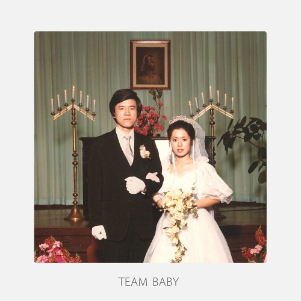

‘자기야 우리 이대로도 괜찮은 걸까’
사랑한단 말이 맨 정신엔 자꾸 뜸해져
그렇다고 내가 변했다고는 생각 말아줘
그럴 때마다 난 어쩔 줄을 모르겠어
babe 알고 있겠지만 사랑이 필요할 땐
ask 그럼 보여줄게 말이 앞서기 전에
변하지 않는 건 다이아몬드 하고
널 사랑 하는 나밖에는 없다고
변하지 않는 건 다이아몬드 하고
널 사랑 하는 나밖에는 없다고
더뎌진 내 발걸음이 가끔씩 다른 곳으로 새고
내가 잘못 고른 단어가 너무 크게 들릴 때
너는 아마 내가 변했다고만 생각하겠지
그럴 때마다 난 어쩔 줄을 모르겠어
babe 알고 있겠지만 사랑이 필요할 땐
ask 그럼 보여줄게 말이 앞서기 전에
변하지 않는 건 다이아몬드 하고
널 사랑 하는 나밖에는 없다고
변하지 않는 건 다이아몬드 하고
널 사랑 하는 나밖에는 없다고
oh come on
I will be good
oh come on
you are my only one